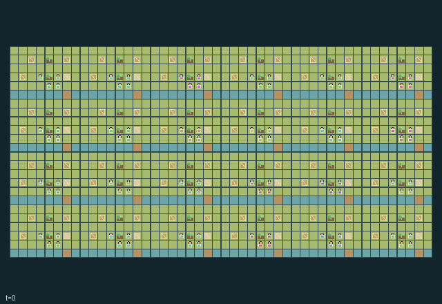

GI239 · Floodplain Seed Cooperative

Sustain household food and communal seeds through complementary care, local harvest labor, downstream water management and livestock shelter.
Identity and original contract
96 independently actionable roles; 19 discrete commands per role; 238 native observation columns per role; original horizon 896 steps. Declared per-step reward range: -4.0 to 4.0. Observation regime: partially_observable.
Source SHA-256: 88c80f02733cafd84a9a6ec94b88c35b218f754b8acd8a799af10423a545881b
The objective, rewards, population, map and horizon remain original. A preview is not a success claim.
Objective and gameplay
Sustain household food and communal seeds through complementary care, local harvest labor, downstream water management and livestock shelter.
Assist changes harvesting; shared tools and seeds alter production; three-slot downstream water/salt and moving trays affect other households; herding restores soils.
- Twenty-four households share a serpentine watershed. All 96 people have native actions; livestock and trays are separate objects.
- Sow a seed, then apply hoe and watering care. Wet and dry crops have distinct moisture/salt limits; orchards grow half as often.
- Harvest needs a sickle and nearby Assist. Private food, seed donation and levee repair compete for each harvest bundle.
- A sluice sends up to two water and one salt units downstream after three subsequent transitions. The final household drains outside the world.
- Boat users launch trays. Wet open source gates move trays through three increments to the next nursery; neighbors can collect the real seed.
- Herd livestock to barns before floods. Safe livestock and fallow fields restore soil. Food consumption and flood damage are native state. Season ends at 896.
Ending: No early natural terminal; farming season truncates at 896 ticks.
What this game explores
Resource commons & externalities: An action changes a persistent resource or burden that another role also encounters. Compare extraction with maintenance and record the downstream resource trajectory.
Complementary production & service: A useful outcome requires ordered stages, scarce equipment or another role's capability. Measure real completed products and resource circulation rather than counting intermediate actions as success.
Survival, protection & rescue: Protection and repair alter another role's future feasible actions. Record losses, exposure, rescue and infrastructure as well as delivery; survival is determined by the actual kernel.
These are questions supported by rule structure, not observed learning effects.
Play it: operating walkthrough
crucibles play --game gi239Keep Python running and open its printed address. Select this game, set a seed and press Create session. The game itself is always English.
Assign a role range to Host with Assign / take over, or Assign all roles. Invite a second participant with Create player invitation, then assign a disjoint subset. Every original role is available.
For every owned role choose a legal command and press Queue. Arrow keys / WASD queue a declared directional action for the current role camera when available. Space or Advance one joint step advances everyone together. Non-directional games use the selectors.
Unqueued roles use the labelled untrained uniform-legal policy. Take over or release roles before the next step without resetting. Full-state debug is privileged and permanently logged; role cameras preserve permissions. Close the session to retain logs. Server restart does not restore sessions.
Complete command reference
IDs and English labels exactly match the manifest. Availability depends on role, resources, location and phase. An available action can still have no productive effect.
0·Wait / receive
1·Walk north
2·Walk east
3·Walk south
4·Walk west
5·Sow carried seed in nearby empty field or orchard
6·Hoe or water crop using current tool
7·Harvest mature crop with sickle and nearby assisting partner
8·Toggle nearby sluice
9·Repair levee using a harvest bundle
10·Collect floating tray, otherwise withdraw nursery seed
11·Launch seed in downstream tray with boat tool
12·Store harvest bundle in household granary
13·Donate seed or harvest bundle to communal nursery
14·Herd adjacent livestock one step toward raised barn
15·Hand cargo to adjacent waiting empty actor
16·Exchange tools with adjacent waiting actor
17·Relay nearby field water level locally
18·Assist nearby harvest
Roles and capability identifiers
These original role names describe capabilities, not interchangeable skins. Check each owned role's legal selector before planning handoffs.
agent_0·hoe farmer
agent_1·watering farmer
agent_2·sickle harvester
agent_3·boat and herd keeper
agent_4·hoe farmer
agent_5·watering farmer
agent_6·sickle harvester
agent_7·boat and herd keeper
agent_8·hoe farmer
agent_9·watering farmer
agent_10·sickle harvester
agent_11·boat and herd keeper
agent_12·hoe farmer
agent_13·watering farmer
agent_14·sickle harvester
agent_15·boat and herd keeper
agent_16·hoe farmer
agent_17·watering farmer
agent_18·sickle harvester
agent_19·boat and herd keeper
agent_20·hoe farmer
agent_21·watering farmer
agent_22·sickle harvester
agent_23·boat and herd keeper
agent_24·hoe farmer
agent_25·watering farmer
agent_26·sickle harvester
agent_27·boat and herd keeper
agent_28·hoe farmer
agent_29·watering farmer
agent_30·sickle harvester
agent_31·boat and herd keeper
agent_32·hoe farmer
agent_33·watering farmer
agent_34·sickle harvester
agent_35·boat and herd keeper
agent_36·hoe farmer
agent_37·watering farmer
agent_38·sickle harvester
agent_39·boat and herd keeper
agent_40·hoe farmer
agent_41·watering farmer
agent_42·sickle harvester
agent_43·boat and herd keeper
agent_44·hoe farmer
agent_45·watering farmer
agent_46·sickle harvester
agent_47·boat and herd keeper
agent_48·hoe farmer
agent_49·watering farmer
agent_50·sickle harvester
agent_51·boat and herd keeper
agent_52·hoe farmer
agent_53·watering farmer
agent_54·sickle harvester
agent_55·boat and herd keeper
agent_56·hoe farmer
agent_57·watering farmer
agent_58·sickle harvester
agent_59·boat and herd keeper
agent_60·hoe farmer
agent_61·watering farmer
agent_62·sickle harvester
agent_63·boat and herd keeper
agent_64·hoe farmer
agent_65·watering farmer
agent_66·sickle harvester
agent_67·boat and herd keeper
agent_68·hoe farmer
agent_69·watering farmer
agent_70·sickle harvester
agent_71·boat and herd keeper
agent_72·hoe farmer
agent_73·watering farmer
agent_74·sickle harvester
agent_75·boat and herd keeper
agent_76·hoe farmer
agent_77·watering farmer
agent_78·sickle harvester
agent_79·boat and herd keeper
agent_80·hoe farmer
agent_81·watering farmer
agent_82·sickle harvester
agent_83·boat and herd keeper
agent_84·hoe farmer
agent_85·watering farmer
agent_86·sickle harvester
agent_87·boat and herd keeper
agent_88·hoe farmer
agent_89·watering farmer
agent_90·sickle harvester
agent_91·boat and herd keeper
agent_92·hoe farmer
agent_93·watering farmer
agent_94·sickle harvester
agent_95·boat and herd keeper
Information and observation permissions
Public village/drainage geometry; only selected nearby entity rows with presence flags are observed. Downstream pipes and remote weather are hidden; local field-water relay requires an actual action. Off-view events are debug-only.
The GIF is full-state debug and may reveal hidden entities or private state. Train on obs[agent], not the picture, state tree or another role's private row. Field slices and visibility are in the original manifest.
Reinforcement-learning integration
import jax
from crucibles_jaxmarl import make
env = make("gi239")
key = jax.random.PRNGKey(0)
key, rk, ak, sk = jax.random.split(key, 4)
obs, state = jax.jit(env.reset)(rk)
actions = env.sample_actions(ak, state)
obs, state, rewards, dones, info = jax.jit(env.step_env)(sk, state, actions)
done = dones["__all__"]Observations are float32 vectors of width 238; actions are scalar int32; masks have 19 entries. Supply all 96 roles each transition. Masked sampling is an engineering reference, not a trained learner.
step_env retains terminal data without reset. step performs outer autoreset and keeps terminal data in info["raw_state"] and info["raw_observation"]. Use dones["__all__"] for episode boundaries; separate completion, failure and time limit in analysis.
JIT or vmap equal identities and shapes. Split independent reset, policy and transition keys. Group different shapes explicitly; do not shrink the population or horizon. Host rendering stays outside training.
Training questions and fair evaluation
Define valid completion from the objective before fitting. Preserve original rewards and also report real deliveries/services, losses, resource state, unresolved episodes and per-role returns. Animation is not a reward signal.
An action changes a persistent resource or burden that another role also encounters. Compare extraction with maintenance and record the downstream resource trajectory.
A useful outcome requires ordered stages, scarce equipment or another role's capability. Measure real completed products and resource circulation rather than counting intermediate actions as success.
Protection and repair alter another role's future feasible actions. Record losses, exposure, rescue and infrastructure as well as delivery; survival is determined by the actual kernel.
Compare memory, communication or centralized critics under matched actor information. Declare critic access; keep actor inputs role-filtered. Match partner/opponent distributions, masks, compute and checkpoint selection. Final tests never enter fitting or selection.
Independent training runs or source-pairing blocks are inferential units; episodes from one policy are not independent training replications. Save hashes, keys, versions, device, time and cost. Negative, zero, failed and indeterminate outcomes are valid. No trained checkpoint or target score is supplied.
Classification and evidence
Overlapping editorial labels are reading aids, not proof of novelty, difficulty, strategic equivalence or learning effects.
- Resource commons & externalities
- Evidence
manifest.task.objective: Sustain household food and communal seeds through complementary care, local harvest labor, downstream water management and livestock shelter.
- Evidence
manifest.task.interaction: Assist changes harvesting; shared tools and seeds alter production; three-slot downstream water/salt and moving trays affect other households; herding restores soils.
- Evidence
manifest.task.observation_access: Public village/drainage geometry; only selected nearby entity rows with presence flags are observed. Downstream pipes and remote weather are hidden; local field-water relay requires an actual action. Off-view events are debug-only.
- Complementary production & service
- Evidence
manifest.task.interaction: Assist changes harvesting; shared tools and seeds alter production; three-slot downstream water/salt and moving trays affect other households; herding restores soils.
- Evidence
manifest.actions.9: Repair levee using a harvest bundle
- Evidence
manifest.actions.10: Collect floating tray, otherwise withdraw nursery seed
- Survival, protection & rescue
- Evidence
manifest.task.objective: Sustain household food and communal seeds through complementary care, local harvest labor, downstream water management and livestock shelter.
- Evidence
scene.rules.5: Herd livestock to barns before floods. Safe livestock and fallow fields restore soil. Food consumption and flood damage are native state. Season ends at 896.
Source, receipts and preview limits
The additional generated state GIF replays saved untrained legal actions through the original kernel. At most 25 actual endpoints include initial and terminal state; no invented interpolation. It is full-state debug, not the role observation. Where an original scene preview exists, it is displayed first with its own recorded information scope. The two recordings may use different trajectories and views.
Original source, observation slices, manifest and mechanism
Native receipt · Presentation receipt
Engineering passes do not establish learning. Nonzero floating differences remain recorded and undetermined; no new tolerance was introduced. Human scores remain unverified.